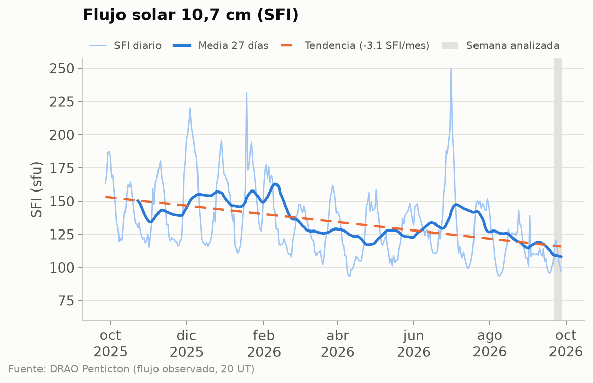
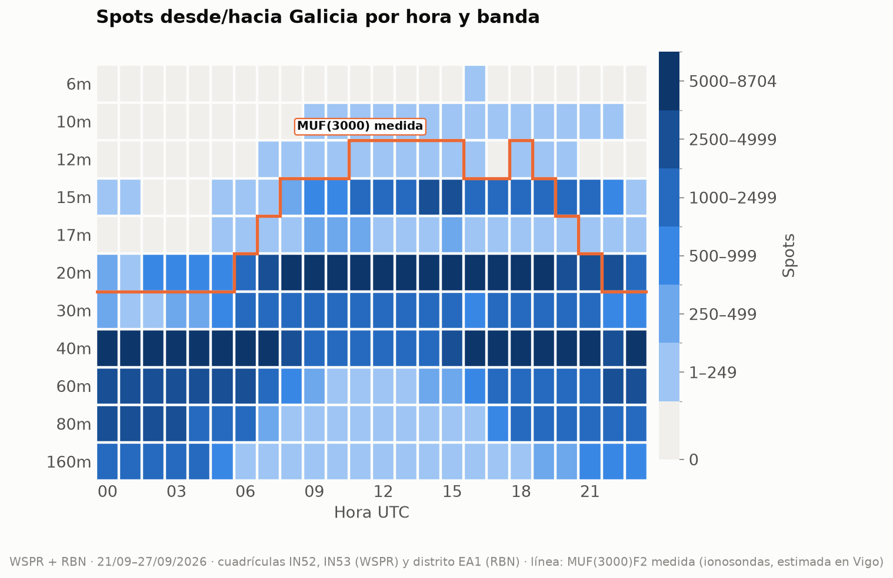
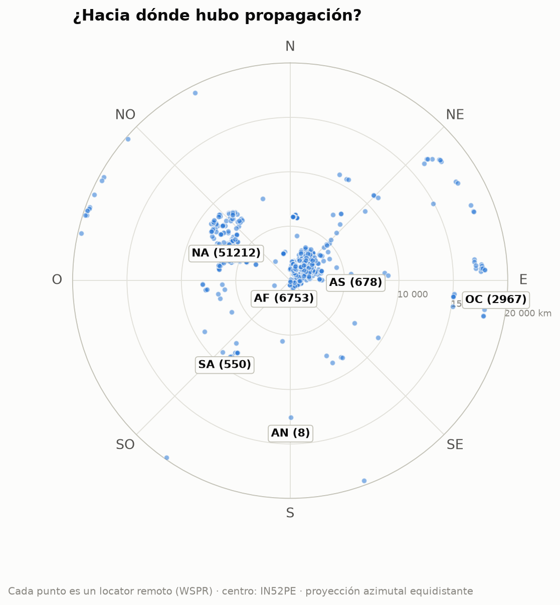
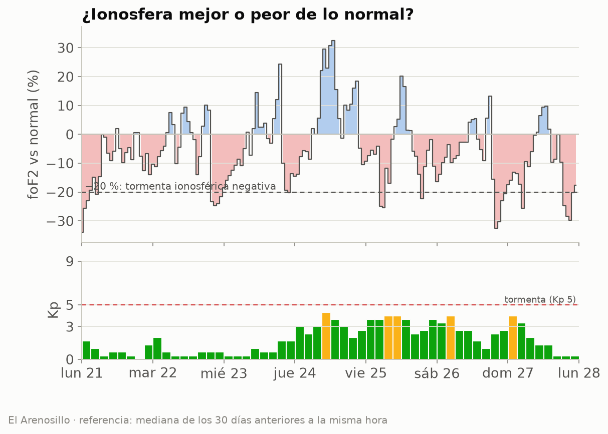
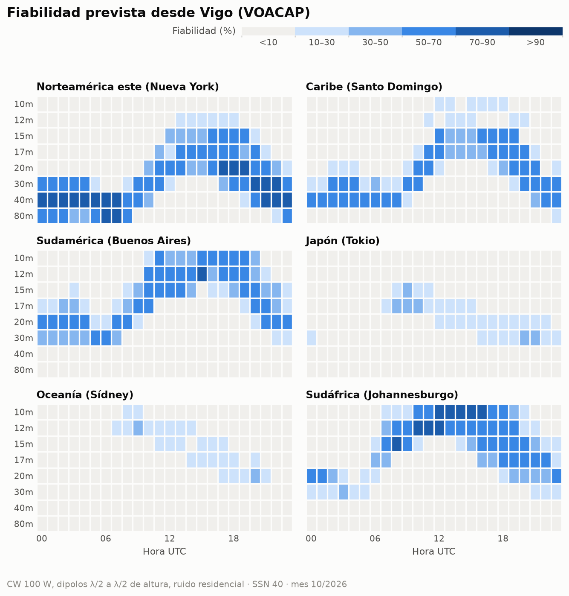
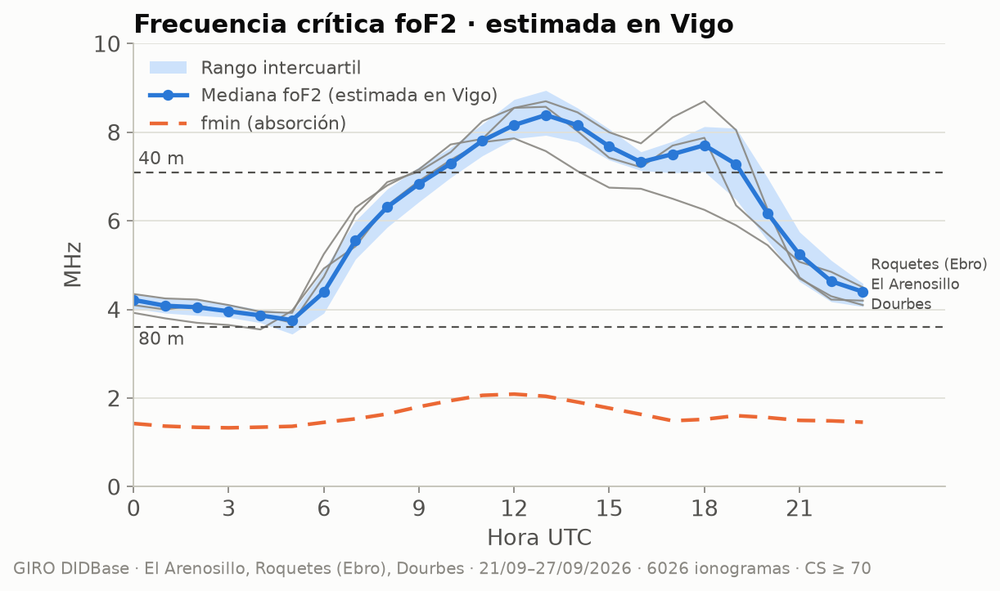

EA1RKV · Unión de Radioaficionados de Vigo-Val Miñor · estación de referencia Vigo (IN52PE) · semana analizada: 21 de septiembre de 2026 – 27 de septiembre de 2026 · previsión: lun 28/9 – dom 4/10
Este informe combina lo que dice la teoría (índices solares, predicciones) con lo que pasó de verdad (spots reales desde Galicia). Todas las horas en UTC salvo que se indique lo contrario.
| Día | SFI | Manchas | Ap | Kp máx. | |
|---|---|---|---|---|---|
| lun 21/9 | 104 | 85 | 3 | 1,67 | 🟢 |
| mar 22/9 | 118 | 126 | 3 | 2,00 | 🟢 |
| mié 23/9 | 121 | 142 | 4 | 1,67 | 🟢 |
| jue 24/9 | 112 | 124 | 16 | 4,33 | 🟡 |
| vie 25/9 | 105 | 110 | 20 | 4,00 | 🟡 |
| sáb 26/9 | 101 | 88 | 13 | 4,00 | 🟡 |
| dom 27/9 | 97 | 67 | 9 | 4,00 | 🟡 |
Semáforo Kp: 🟢 ≤ 3 tranquilo · 🟡 4 inquieto · 🔴 ≥ 5 tormenta.

Estamos en la fase descendente del ciclo 25: el SFI baja poco a poco, con altibajos de ~27 días (la rotación del Sol). La línea discontinua marca la tendencia del último año.
Lo que espera NOAA para esta semana: SFI entre 90 y 105, Ap máximo 12 y Kp máximo 4 (🟡 inquieto); días con Kp ≥ 4 previstos: dom 4/10.
Esta semana se registraron 359 939 spots con una estación gallega en un extremo (297 600 de WSPR, de 5 estaciones en IN52/IN53, y 62 339 de la Reverse Beacon Network en CW/RTTY). Las bandas con más actividad fueron 40m (114 120), 20m (103 891), 60m (41 078), 80m (31 947), y la hora más movida, las 18 UTC.

Cómo leerlo: cada casilla es una hora UTC en una banda; cuanto más oscura, más spots. Fíjate en cómo las bandas altas (10–15 m) se «encienden» con el Sol y las bajas (40–80 m) de noche.__La línea naranja es la MUF(3000)F2 medida por las ionosondas: por debajo de ella, la teoría dice que la banda abre para un salto de 3 000 km. Si los spots siguen la línea, teoría y realidad coinciden.
| Banda | Distancia | Estación gallega | Corresponsal | Locator | Continente | Cuándo | SNR |
|---|---|---|---|---|---|---|---|
| 160m | 5 627 km | EB1A | KK4FL (oyó a Galicia) | FM17tv | Norteamérica | lun 21/9 05:24 UTC | -23 dB |
| 80m | 19 820 km | EB1A | ZL2005SWL (oyó a Galicia) | RE68mx | Oceanía | jue 24/9 06:24 UTC | -24 dB |
| 60m | 19 820 km | EB1A | ZL2005SWL (oyó a Galicia) | RE68mx | Oceanía | jue 24/9 06:18 UTC | -24 dB |
| 40m | 19 820 km | EB1A | ZL2005SWL (oyó a Galicia) | RE68mx | Oceanía | mié 23/9 06:54 UTC | -19 dB |
| 30m | 19 820 km | EB1A | ZL2005SWL (oyó a Galicia) | RE68mx | Oceanía | mar 22/9 18:32 UTC | -27 dB |
| 20m | 19 828 km | EB1A | ZL3TKI (oyó a Galicia) | RE66hk | Oceanía | mar 22/9 18:52 UTC | -22 dB |
| 17m | 17 745 km | QA6OKW | VK5WA/2 (oyó a Galicia) | QG50nf | Oceanía | lun 21/9 10:12 UTC | -26 dB |
| 15m | 18 000 km | EB1A | VK7FLYN (oyó a Galicia) | QE38lr | Oceanía | jue 24/9 12:50 UTC | -21 dB |
Distancias de círculo máximo medidas desde IN52PE (WSPR).
| Continente | Spots | 160m | 80m | 60m | 40m | 30m | 20m | 17m | 15m | 12m | 10m | 6m |
|---|---|---|---|---|---|---|---|---|---|---|---|---|
| Europa | 285 223 | 10777 | 28539 | 32847 | 97961 | 26788 | 76342 | 1990 | 9893 | 28 | 49 | 9 |
| Norteamérica | 61 464 | 230 | 2697 | 7073 | 12784 | 1553 | 23193 | 729 | 13172 | 11 | 22 | · |
| África | 7 038 | 423 | 650 | 1072 | 1699 | 603 | 1603 | 111 | 861 | · | 16 | · |
| Oceanía | 3 295 | · | 16 | 86 | 1021 | 427 | 1613 | 9 | 123 | · | · | · |
| Asia | 2 014 | · | 26 | · | 444 | 158 | 903 | 68 | 386 | 14 | 15 | · |
| Sudamérica | 897 | · | 19 | · | 207 | 18 | 237 | 14 | 370 | 6 | 26 | · |
| Antártida | 8 | · | · | · | 4 | 4 | · | · | · | · | · | · |

Mapa centrado en Vigo: el ángulo es el rumbo al que apuntaría tu antena y la distancia al centro, los kilómetros. Entre paréntesis, los spots de cada continente. 1 520 locators distintos.
Datos de las digisondas de El Arenosillo (37,1° N), Roquetes (Ebro) (40,8° N), Dourbes (50,1° N). Solo usamos ionogramas con confianza de autoescalado ≥ 70 % y descartamos los valores que se salen de lo que marcan sus vecinos (los errores típicos del escalado automático).

La foF2 se movió en torno a lo habitual (media semanal -6 %; el peor día, el dom 27/9, con -11 %). Sin tormentas ionosféricas negativas.
Se compara cada medida de El Arenosillo con la mediana de los 30 días anteriores a la misma hora. Por debajo del −20 % hablamos de tormenta ionosférica negativa.
Algo: la foEs pasó de 5,6 MHz, lo bastante para aperturas cortas en 10 m, pero no llegó a 6 m.
| Ionosonda | Día | Desde | Hasta (UTC) | foEs máx. | MUF Es (~1 800 km) | Banda | Spots WSPR |
|---|---|---|---|---|---|---|---|
| Roquetes (Ebro) | mié 23/9 | 16:00 | 16:15 | 5,9 MHz | 30 MHz | 10m | 0 |
La MUF de la Es para un salto de 1 500–2 000 km es unas 5 veces la foEs. «Spots WSPR»: spots de esa banda a 800–2 500 km desde Galicia durante el episodio.
Comparamos, hora a hora, lo que dice la MUF(3000) medida con lo que se oyó de verdad a 2 000–4 000 km (un salto de F2) en 20m, 17m, 15m. Coinciden en el 76 % de las 72 casillas hora × banda. En 9 la MUF decía «abierta» pero no hubo spots (poca actividad WSPR en esa banda y hora, o absorción). En 8 hubo spots aunque la MUF típica no llegaba, sobre todo en 20m y 17m: días mejores que la mediana o esporádica E. La línea naranja del mapa de calor muestra lo mismo de un vistazo.
Bandas con fiabilidad media ≥ 50 % por franja horaria (UTC), la mejor primero. En cursiva, la mejor banda cuando ninguna llega al 50 % (apertura posible pero poco fiable):
| Destino | km | Rumbo | 00–04 | 04–08 | 08–12 | 12–16 | 16–20 | 20–24 |
|---|---|---|---|---|---|---|---|---|
| Norteamérica este (Nueva York) | 5 307 | 291° | 40m, 30m, 80m | 40m, 80m | 30m (47 %) | 20m (50 %) | 20m, 17m, 15m | 40m, 30m |
| Caribe (Santo Domingo) | 6 288 | 265° | 40m | 40m | 20m (34 %) | 15m (42 %) | 17m, 15m | 30m |
| Sudamérica (Buenos Aires) | 9 922 | 219° | 20m | 30m (45 %) | 15m (48 %) | 12m | 10m, 12m | 20m (46 %) |
| Japón (Tokio) | 10 780 | 25° | — | — | 17m (39 %) | — | 20m (23 %) | 30m (31 %) |
| Oceanía (Sídney) | 18 035 | 69° | — | — | 12m (22 %) | — | — | — |
| Sudáfrica (Johannesburgo) | 8 489 | 146° | 20m (44 %) | — | 12m | 10m, 12m | 12m, 15m, 10m | 17m (47 %) |

Supuestos: CW a 100 W, dipolos de media onda a media longitud de onda de altura en los dos extremos, ruido residencial. SSN usado: 40 (SSN efectivo del SFI previsto (99)). En SSB hacen falta ~17 dB más de señal, así que resta fiabilidad; en FT8, suma. VOACAP describe el promedio mensual: un día concreto puede ir mucho mejor o peor.
Combinando El Arenosillo, Roquetes (Ebro), Dourbes y llevándolas a la latitud y la hora local de Vigo (El Arenosillo sola, 5° más al sur, resulta algo optimista), la foF2 mediana estimada en Vigo fue de 6,2 MHz la semana pasada: de 3,8 MHz de madrugada a 8,4 MHz hacia las 13 UTC. El pico de la capa F2 estuvo de mediana a 263 km.

| Trayecto | sec φ | 80 m abierta | 40 m abierta | MUF (mín.–máx.) |
|---|---|---|---|---|
| NVIS (Galicia, < 200 km) | 1,00 | 06–03 UTC | 12–15 UTC | 3,8–8,4 MHz |
| Vigo – Madrid (~460 km) | 1,32 | todo el día | 08–21 UTC | 4,7–11,4 MHz |
| Vigo – Barcelona (~900 km) | 1,90 | 16–09 UTC · absorción: 09–16 UTC | 06–23 UTC | 6,5–16,6 MHz |
A 3 000 km (un salto de F2, p. ej. Canarias–Escandinavia): la MUF(3000)F2 medida fue de 11,5 a 27,7 MHz (máxima hacia las 13 UTC). 20m: 07–22 UTC · 17m: 08–21 UTC · 15m: 09–20 UTC · 12m: 13–14 UTC · 10m: cerrada.
¿Por qué importa foF2? Es la frecuencia más alta que la capa F2 devuelve a tierra cuando la señal sube en vertical. En NVIS (Near Vertical Incidence Skywave, antenas bajas que radian hacia arriba) solo rebotan las frecuencias por debajo de foF2: si foF2 cae por debajo de 7,1 MHz, los 40 m «saltan» Galicia y hay que bajar a 80 m. Para trayectos más largos la señal llega inclinada y la capa aguanta más: la MUF de un salto es aproximadamente foF2 · sec(φ), donde φ es el ángulo de incidencia en la ionosfera, calculado con la altura real del pico (hmF2) que mide la ionosonda. Para 3 000 km usamos directamente la MUF(3000)F2 que publica la digisonda, que ya tiene en cuenta la curvatura de la Tierra.
¿Y por abajo? La capa D absorbe las frecuencias bajas de día. La fmin (frecuencia más baja del ionograma) sube a mediodía por esa absorción: la usamos para estimar la LUF (≈ fmin · √sec φ en la capa D). Una banda está «abierta» si la MUF la supera con un 10 % de margen y la LUF queda por debajo; «absorción» son las horas en que la MUF la deja pasar pero la capa D la cierra.
El jue 1/10, en Vigo amanece a las 06:31 UTC y anochece a las 18:16 UTC. Durante el crepúsculo la absorción de la capa D desaparece antes de que se deshaga la capa F: es el momento de buscar DX en 160, 80 y 40 m a lo largo del terminador.
| Destino | Orto DX | Ocaso DX | Terminador común (±45 min) | Noche en los dos extremos |
|---|---|---|---|---|
| Norteamérica este (Nueva York) | 10:52 | 22:37 | — | 22:39–06:31 |
| Caribe (Santo Domingo) | 10:30 | 22:28 | — | 22:28–06:31 |
| Sudamérica (Buenos Aires) | 09:30 | 21:56 | — | 21:55–06:31 |
| Japón (Tokio) | 20:35 | 08:25 | — | 18:16–20:36 |
| Oceanía (Sídney) | 19:32 | 07:57 | 18:46–19:01 UTC (ocaso Vigo / orto DX) | 18:16–19:31 |
| Sudáfrica (Johannesburgo) | 03:47 | 16:07 | — | 18:18–03:47 |
El «terminador común» es la línea gris propiamente dicha (amanecer o anochecer a la vez en los dos extremos). La «noche en los dos extremos» es la ventana para 160 y 80 m, y a menudo para 40 m.
| Concurso | Empieza (UTC) | Termina (UTC) | Horas |
|---|---|---|---|
| URC DX RTTY Contest | vie 2/10 00:00 | sáb 3/10 00:00 | 24 |
| K1USN Slow Speed Test | vie 2/10 20:00 | vie 2/10 21:00 | 1 |
| George Batterson 1936 QSO Party | vie 2/10 23:00 | lun 5/10 03:00 | 52 |
| TRC DX Contest | sáb 3/10 06:00 | dom 4/10 18:00 | 36 |
| Oceania DX Contest, Phone | sáb 3/10 06:00 | dom 4/10 06:00 | 24 |
| German Telegraphy Contest | sáb 3/10 07:00 | sáb 3/10 10:00 | 3 |
| Russian WW Digital Contest | sáb 3/10 12:00 | dom 4/10 11:59 | 24 |
| IARU Region 1 UHF/Microwaves Contest | sáb 3/10 14:00 | dom 4/10 14:00 | 24 |
| California QSO Party | sáb 3/10 16:00 | dom 4/10 22:00 | 30 |
| International HELL-Contest | sáb 3/10 16:00 | dom 4/10 11:00 | 19 |
| 50 MHz Fall Sprint | sáb 3/10 18:00 | sáb 3/10 22:00 | 4 |
| IARU Region 2 Area G HF SSB Contest | sáb 3/10 22:00 | sáb 3/10 23:59 | 2 |
| Collegiate QSO Party | dom 4/10 00:00 | lun 5/10 23:59 | 48 |
| UBA ON Contest, SSB | dom 4/10 06:00 | dom 4/10 10:00 | 4 |
| Peanut Power QRP Sprint | dom 4/10 22:00 | dom 4/10 23:59 | 2 |
Consejo: el meteor scatter funciona mejor al amanecer local, cuando la Tierra «barre» los meteoros de frente. Modos: MSK144 (6 m/2 m) con WSJT-X.
Los mejores pases (elevación máxima ≥ 30°) de cada satélite:
| Satélite | Día | AOS (UTC) | LOS (UTC) | Hora local | Elev. máx. | Min |
|---|---|---|---|---|---|---|
| RS-44 | lun 28/9 | 05:23 | 05:46 | 07:23 | 81° | 23 |
| ISS | lun 28/9 | 12:51 | 13:02 | 14:51 | 82° | 11 |
| FO-29 | mar 29/9 | 06:19 | 06:40 | 08:19 | 80° | 20 |
| AO-123 | mar 29/9 | 09:05 | 09:16 | 11:05 | 55° | 11 |
| SO-50 | mar 29/9 | 12:54 | 13:09 | 14:54 | 68° | 14 |
| RS-44 | mar 29/9 | 18:24 | 18:47 | 20:24 | 83° | 23 |
| ISS | mar 29/9 | 18:33 | 18:44 | 20:33 | 72° | 11 |
| SO-50 | mar 29/9 | 21:23 | 21:37 | 23:23 | 71° | 14 |
| AO-7 | mié 30/9 | 07:48 | 08:10 | 09:48 | 84° | 22 |
| AO-27 | mié 30/9 | 11:10 | 11:25 | 13:10 | 82° | 15 |
| FO-29 | jue 1/10 | 06:14 | 06:34 | 08:14 | 76° | 20 |
| AO-27 | jue 1/10 | 21:58 | 22:13 | 23:58 | 84° | 15 |
| RS-44 | vie 2/10 | 05:05 | 05:27 | 07:05 | 89° | 22 |
| AO-7 | vie 2/10 | 07:41 | 08:03 | 09:41 | 89° | 22 |
| AO-123 | vie 2/10 | 08:57 | 09:08 | 10:57 | 72° | 11 |
| ISS | vie 2/10 | 11:19 | 11:30 | 13:19 | 84° | 11 |
| SO-50 | vie 2/10 | 20:35 | 20:48 | 22:35 | 70° | 14 |
| AO-123 | vie 2/10 | 21:52 | 22:03 | 23:52 | 68° | 11 |
| FO-29 | sáb 3/10 | 06:09 | 06:29 | 08:09 | 71° | 20 |
| AO-7 | dom 4/10 | 07:33 | 07:56 | 09:33 | 82° | 22 |
| AO-27 | dom 4/10 | 22:08 | 22:23 | 00:08 | 80° | 15 |
PENDIENTE: un socio debe escribir aquí su comentario (qué trabajó, qué oyó, qué recomienda para la semana). El informe no se publica sin este párrafo.
Borrador generado automáticamente el 2026-09-28 14:05 UTC por el script del radioclub EA1RKV. Las secciones sin datos indican que la fuente no respondió esta semana.